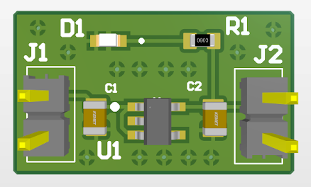

LDO Voltage Regulator PCB
Custom LDO regulator PCB for WARG's electrical onboarding bootcamp. Full design flow in Altium: schematic, custom symbols, footprints, placement, routing, and DRC.
0DRC violations
DC biasVerified
Result: manufacturable board with zero DRC violations; DC bias verified with Murata SimSurface.